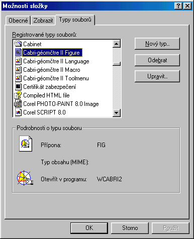
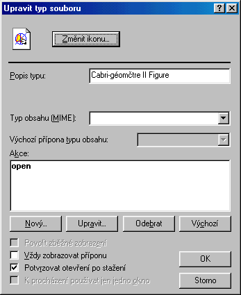
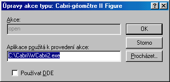
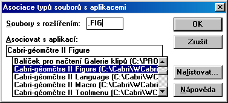

Nastavení asociace se soubory FIG
Windows 95, 98, NT
- Nastavte v Prùzkumníku v nabídce Zobrazit / Možnosti kartu Typy souborù.
Najdìte typ Cabri Geometry II Figure a zvolte Upravit.

Pozn. Pokud se tato položka vùbec
nevyskytuje, nainstalujte Cabri znovu nebo položku vytvoøte (volba
Nový typ, opište následující okna)
- V dalším oknì
- kontrolujte pøíponu (.FIG) a akci open. Chybí-li, akce open, pøipište ji do okna.
- Volte Upravit a zkontrolujte akci open podrobnìji.
- Volte znovu Upravit a poté eventuelnì Procházet.

- Zkontrolujte umístìní spouštìcího souboru, tedy cestu k programu Cabri
soubor Wcabri2d.exe nebo, máte-li plnou
verzi programu, soubor Wcabri2.exe. Eventuelnì
volte Procházet.

Windows 3.1/3.11
Ve Správci souborù oznaète myší daný soubor
FIG, který nelze spustit.
V nabídce Soubor/Asociuj... nastavte,
kterou aplikací budete chtít tento typ souboru otvírat.

Pokud pøíslušný soubor nelze vybrat pøímo v nabídce, volte Nalistovat ...:
a najdìte soubor Wcabri2d.exe nebo, máte-li plnou verzi programu, Wcabri2.exe